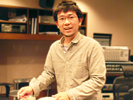
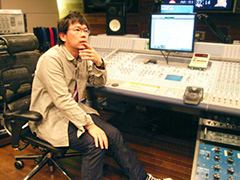
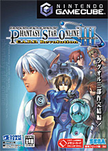

そしてセガに入って、どうでしかた？当時はどのようなことがやりたいと思っていたのでしょうか？
入ってみたら、周りはすごい楽曲を書く人達だらけだったので、こんなすごい人達の中で果たして自分はやっていけるのかと不安ばっかりでしたね。それまでは自己満足で作っていた部分があったので。
入社してすぐ曲を作る事になりましたが、初めて作った曲は、『デイトナUSAサーキットエディション』の一曲でした。自分でも当時『セガラリー』が好きでしたので、レーシングゲームの音楽を作れて嬉しかったですね。自分にとってゲームサウンドの重要性を知る事が出来た記念すべきタイトルでした。
床井さんと音楽との出会いはいつ頃からでしょうか？ご両親も音楽に精通した方だったのでしょうか？
全く音楽とは無縁な家庭だったんですよ。
でも、幼稚園のときに、自分からピアノをやりたいって言ったのが始まりで、とにかく子供の頃は音楽三昧でした。吹奏楽部やりつつ帰ってきたらピアノのレッスン、日曜には合唱団やって。常に音楽に触れてました。
中、高校ではシンセに目覚めましたね。やはりYMOの影響受けまくりでしたから。シンセを弾いてる姿がかっこ良かったですからね。親にYAMAHA DX-7というシンセと坂本龍一の音色ロムを買ってもらって夢中になりました。
大学になってからはバンドを掛け持ちし始めました。シンセやベースを担当して、都内のライブハウスやイベントなど活発に活動していました。これと平行で自分の好きな音楽を作ったりと、初めて宅録を行った頃です。コンピューターがまだ100万もする時代ですから、全機材200万ものローンを組んで。無茶してましたね。
サンプリングコラージュという手法が格好良かった時代でしたから、まねしてサンプリングしてました。ジャズっぽいサックスのフレーズとか古くさいリズムとかネタを探すのが面白かったですね。よくフロッピーで保存してたなあと（笑）。
今ではコンピューター1台で完結できてしまう良い時代ですが、この頃に機材を持つ事は一つの試練だったんじゃないかと思います。新車が買える程高かったですし、容量はほんの少しだし、今みたいに音色盛り沢山ではなく1から作らなくてはならない事も多かった。機材を徹底的に使いこなさなくてはやりたい音楽が出来ませんでしたから、「音楽にしがみつく」という表現が正しいかもしれませんね（笑）。
卒業後は、自分の時間がちゃんと取れる職業を選んだという感じです。収入の多い仕事だったので、そこでがっつりと音楽機材を一新した時期でもあります。この頃はコンピレーションアルバムに参加出来たり、レコーディングを経験したりと、何かしらプロの現場に触れる機会があったので、やはりプロになりたいという意識がここで高まったと思います。
現在はどのようなお仕事をされているのですか？
引き続きソニックチームのタイトルを手掛けています。
まだ発表されてない事もあり詳しくは言えないのですが、すでに楽曲制作も中盤に差し掛かろうとしています。7月にはレコーディングに入る予定で、今とてもバタバタしておりますが、なかなか良いものに仕上がって来ました。どうぞご期待下さい！
今までのお仕事の中で、一番印象に残っているものは何ですか？
ソニックシリーズの音楽を長年携わってきましたが、今回の『ソニックと秘密のリング』は異なるイメージだったのでかなり印象が強いですね。とてもダークというか、緊迫感のあるステージが多かったですから。
自分の根で作ってしまうと、ファンクとか、R&Bやらゴスペルみたいなソウルフルな明るいイメージになってしまいますので、気を抜けませんでした。
『ソニックと秘密のリング』以外で答えると、やはり『Phantasy Star Online Episode III C.A.R.D. Revolution』です。 初めてのディレクションでもあり、全てが初めての事だらけでした。オーケストラの生録音を海外で行う事が出来たのも大きかったですし、それこそオケが奏でるハーモニーで感情に訴える楽曲を構成出来た事が何よりも嬉しかったです。
この時のテーマ曲はソプラノのChrisの歌唱があまりにも繊細でオケに埋もれてしまった為に一度は断念したものの、リベンジとして指揮者の天野氏ご自身の仕事と合わせ再度ポーランドで再収録して頂いた思い出深い曲でもあります。
一度目の収録の後、彼は一生懸命歌を練習したんでしょうね。
とても自信に満ちあふれる神秘的な歌声に一発で魅了されました。
天使そのものでしたから。
ソニックシリーズの中で、一番好きなキャラクターは誰ですか？
その理由も教えて下さい。
これはやっぱりナックルズですね！
ソニックアドベンチャーシリーズでは彼のテーマ曲を制作しましたし。とても懐かしい相棒でもあります。すごく硬派でもあり頑固な所とは裏腹に、三枚目的な要素もあったりして。なんか自分にかぶるところもあったりして（笑）。そういう自然体なところが好きですね。
床井さんにとってソニックとは？
うーん、なんだろうなー…。
コツコツやるとかじゃなくて、何でもサラッとやってしまうし、何の躊躇も持たずに世界に飛び出してしまう、弟的存在でしょうか。心配性の自分としてはほんとに見習いたい所です。
最後に、「ソニック チャンネル」をご覧になっているみなさんに
一言お願いできますでしょうか？
『ソニックと秘密のリング』を遊んで頂いた方、サウンドトラック「SEVEN RINGS IN HAND」を聴いて頂いた方、本当に有り難うございました。
末永く楽しんで頂ければ嬉しいです。
そしてまだ未体験で、この記事をご覧になった事で興味を持った方にもぜひゲームやサントラを手にして頂けたらと思っております。
これからもソニックを応援宜しくお願い致します！